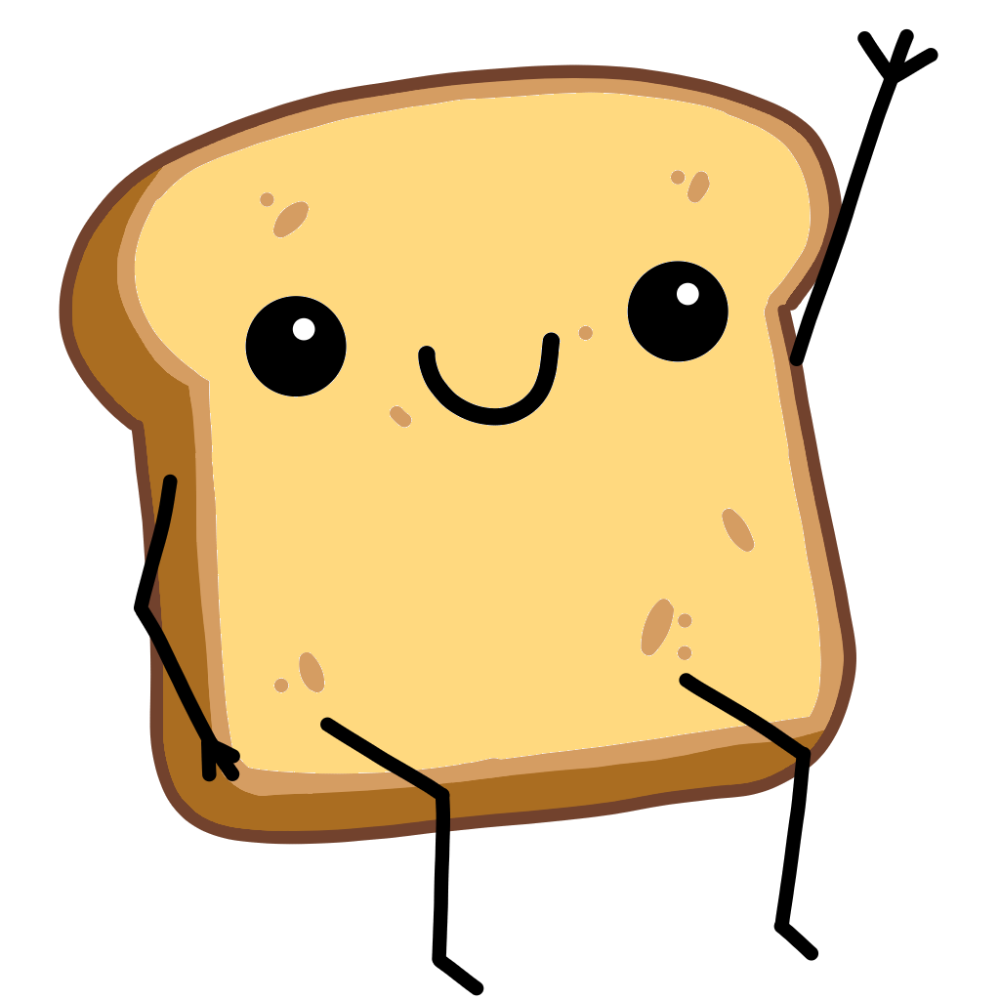

Wholegrain Accounts
Link your account
Sign in to connect this game profile to your Wholegrain account.
Wholegrain accounts keep your game profiles connected across every title without adding a separate login to each game.

Wholegrain Accounts
Sign in to connect this game profile to your Wholegrain account.
Wholegrain accounts keep your game profiles connected across every title without adding a separate login to each game.